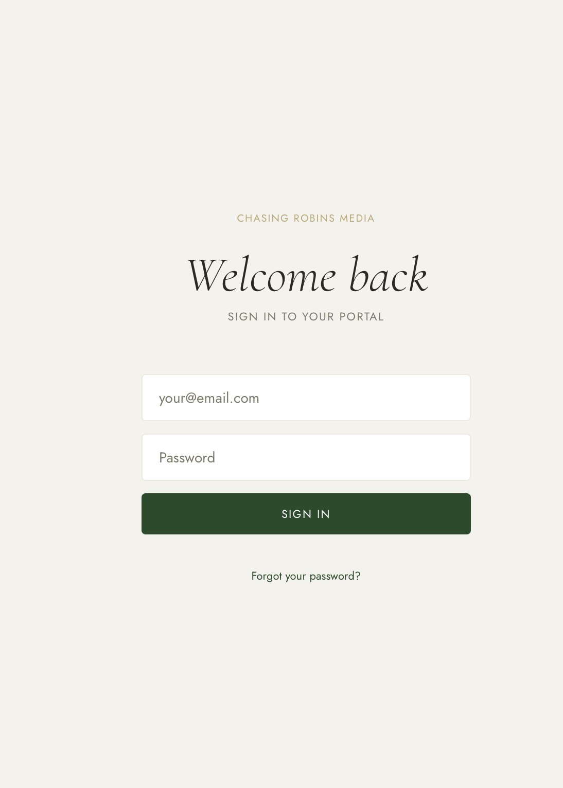
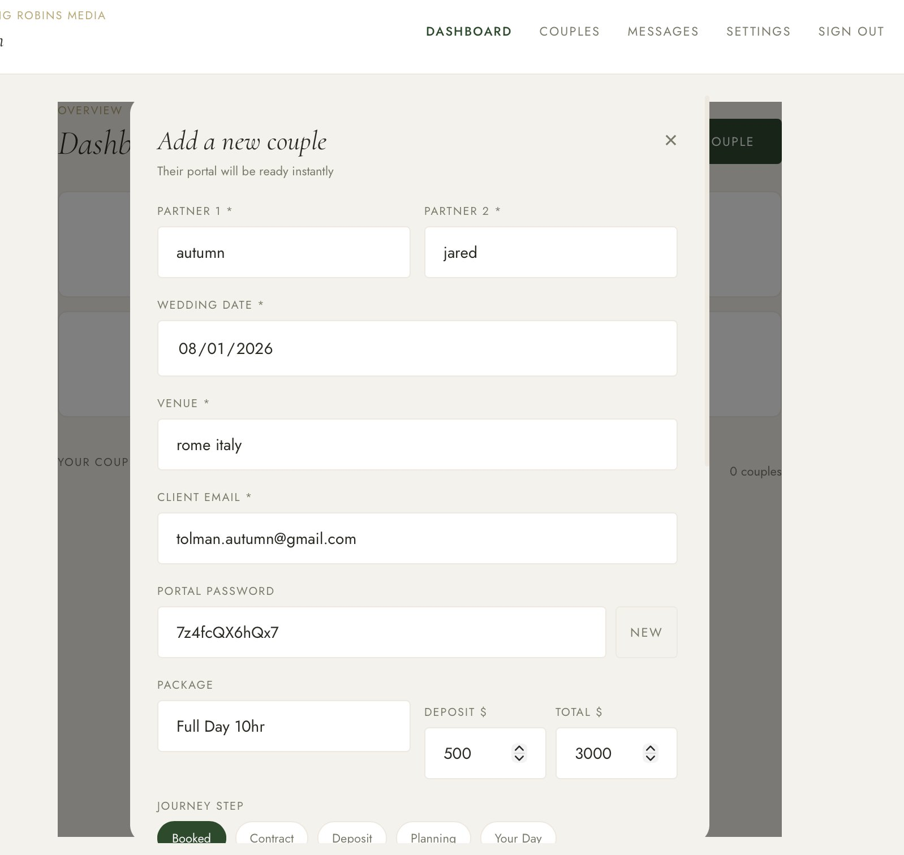
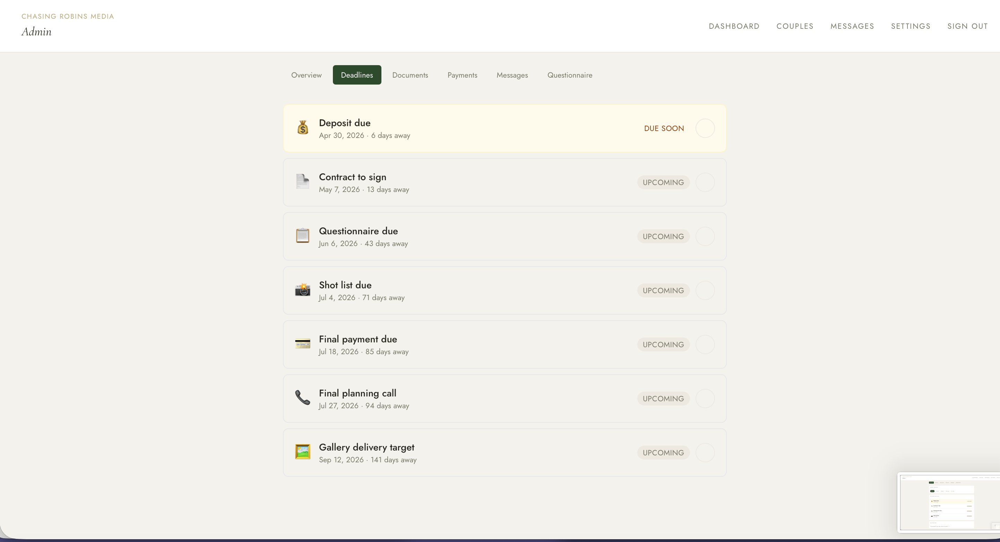
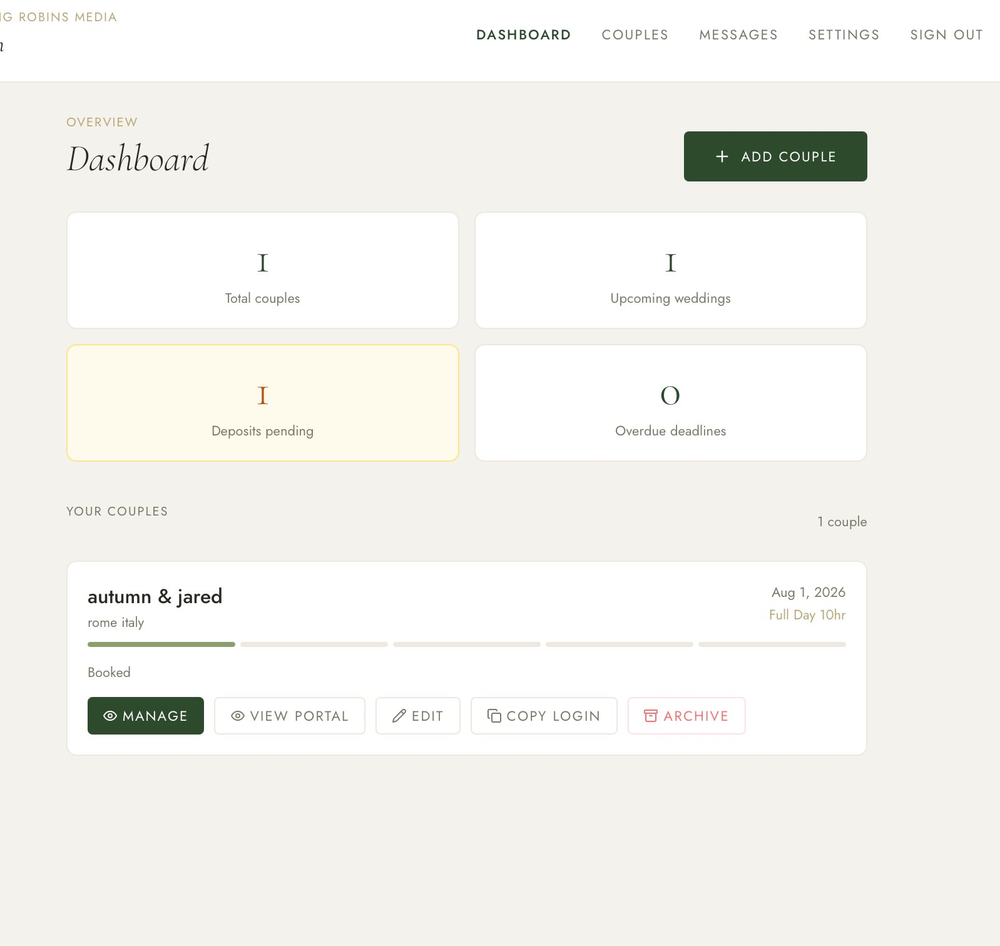
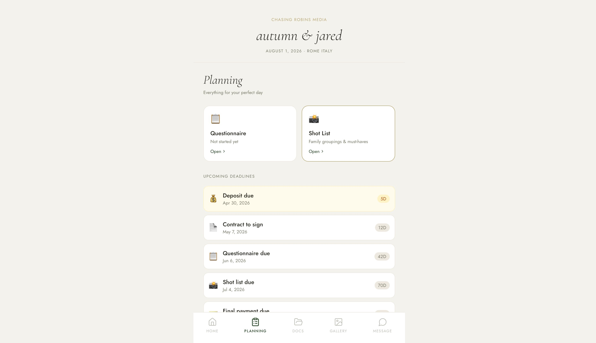
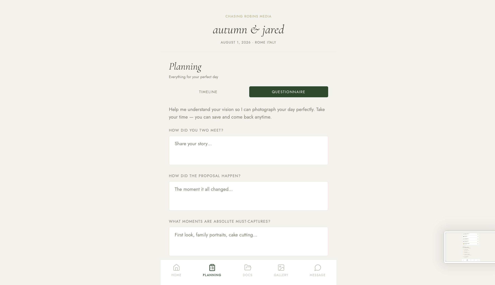
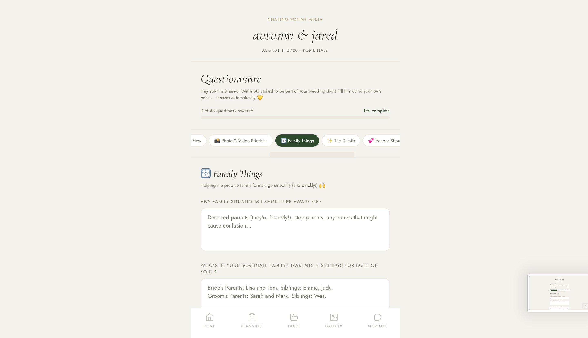
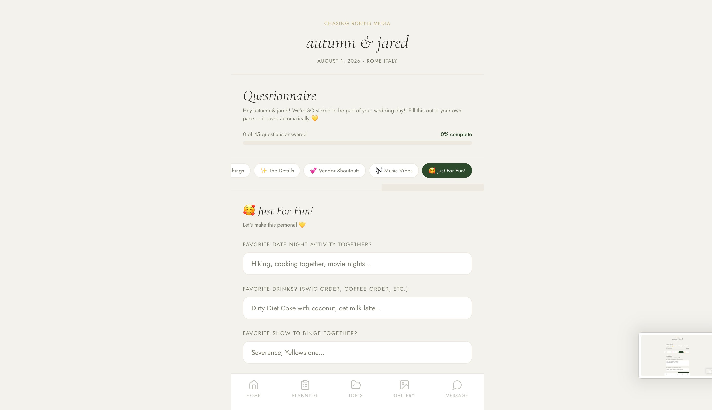
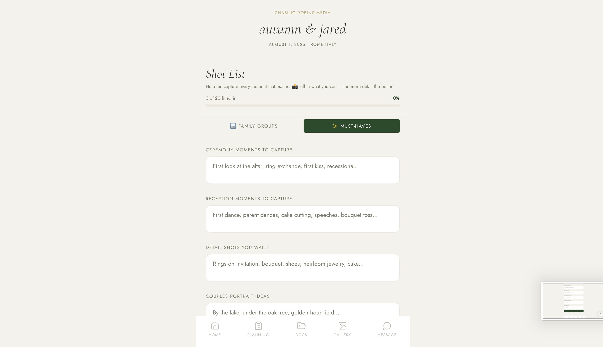
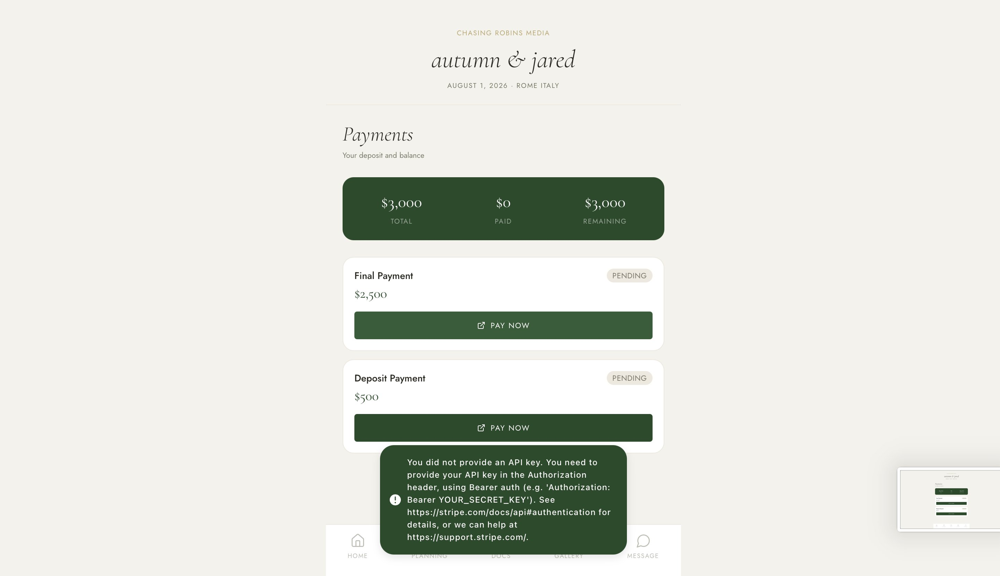

Every hour I spent chasing a contract signature or re-sending a payment link was an hour I wasn't behind a camera. The invisible overhead of running a photography business was quietly stealing the thing that made the work worth doing.
The problem wasn't just inefficiency. It was the fragmentation of a deeply personal experience — a couple's wedding — across a dozen disconnected tools that never talked to each other.
"I didn't need another tool. I needed one space that understood the full arc — from booking to gallery delivery — and made both me and my couples feel held." — Design principle that drove every decision
I was both the designer and a primary user — which gave me rare access to the admin experience, but required me to deliberately step out of my own perspective when designing the client side. Research happened in three modes: lived experience, peer interviews, and competitive analysis.
Informal conversations with wedding photographers about their current workflow. Every single one mentioned email overwhelm and payment anxiety as their top administrative pain points.
Past clients and engaged couples described a shared anxiety: not knowing what was expected of them, or when. Clarity and a sense of forward momentum were the most requested qualities.
HoneyBook, Dubsado, Pixieset, and 17hats were all evaluated. Each solved a slice of the problem. None created a cohesive branded experience. None prioritized the client's emotional journey.
Good design isn't decoration applied after the decisions are made — it's the reasoning behind them. Here's why this portal looks and works the way it does.
Forest green, cream, and gold weren't chosen from a mood board. They were chosen to communicate trustworthiness (green), warmth (cream), and the premium nature of a wedding milestone (gold). Cormorant Garamond adds editorial gravitas without feeling cold. DM Sans keeps the UI readable and modern.
The admin and client experiences are completely separate. I explicitly designed against the pattern of a "shared view" — because the mental model of a photographer managing a business is nothing like the mental model of a couple planning a wedding. Supabase RLS enforces this at the data layer.
Couples open the portal not just to complete tasks, but to feel excited. The countdown to the wedding and the journey progress tracker were designed as emotional anchors — they make the portal feel alive and personal, not transactional. Every visit reinforces: something beautiful is coming.
Wedding questionnaires are long and personal. Couples fill them in across multiple sessions — thinking, consulting each other, coming back. Auto-save with a visible progress bar removes the anxiety of losing work and the obligation to finish in one sitting. It also dramatically increases completion rates.
Redirecting couples to a payment platform breaks the trust loop. Integrating Stripe directly into the portal means they never leave the branded experience. The psychological safety of "my photographer is this organized" converts at a higher rate than any payment link ever could.
Couples are planning weddings on their phones, in bed, between appointments. The entire client portal was designed mobile-first — not as a responsive afterthought. The admin dashboard prioritized tablet-up, since photographers typically work from laptops. Two users, two primary viewports.
The admin dashboard was designed around the question: "What do I need to know in the first 10 seconds of opening this?" The answer: which couples have outstanding tasks, upcoming deadlines, and unpaid balances. Everything else is secondary. The layout puts high-priority signal at the top, with expandable detail below. Finance tracking was designed as a simple ledger — no accounting software complexity, just what a small creative business actually needs.
Photographers aren't accountants. The finance view needed to feel like a clear, calming overview — not a spreadsheet transplanted into a web app. I chose card-based grouping by couple rather than a flat transaction list, because the mental model is always "couple-first."
The first thing a couple sees when they log in is their countdown clock and a visual journey tracker showing exactly where they are in the wedding photography process. This wasn't about gamification — it was about replacing anxiety with anticipation. The journey tracker maps to real milestones (Booked → Contract Signed → Retainer Paid → Questionnaire Complete → Wedding Day → Gallery Delivered) and updates automatically as tasks are completed.
The emotional job of the portal's home screen is to make couples feel excited, not managed. The countdown makes every visit feel personal. The tracker answers the question they're too nervous to ask: "Are we doing this right?"
The questionnaire collects everything needed to photograph a wedding meaningfully: family dynamics, must-have shots, ceremony logistics, vendor contacts, personal stories. It's long by necessity. The design solves for this by breaking it into named sections with a persistent progress bar, auto-saving on every field blur, and showing a "resume" state when a couple returns mid-fill. Completion triggers a notification to the admin.
Every form I've ever seen for this purpose feels like a survey. I wanted this to feel like a conversation — a couple sharing their story with someone who cares. Visual breathing room, generous field spacing, and warm microcopy were all deliberate decisions against the clinical form aesthetic.
Rather than a freeform text field, the shot list builder uses a structured format with preset categories (family formals, couple portraits, ceremony moments, details) and add/remove rows. This serves both users: clients have a framework that helps them think, and the admin receives a clean, organized list that maps directly to how I work on a wedding day. The builder was designed in consultation with my own shooting workflow.
Unstructured shot list input consistently produces unusable output. The builder is a design decision that improves both the client experience (clarity) and the admin output (usability on the day). Constraints here are a feature, not a limitation.
Messaging is scoped per couple, persistent, and real-time via Supabase subscriptions. Couples see their own thread; admins see all threads with unread indicators. The decision to build messaging into the portal rather than relying on email was deliberate: it keeps communication in context, creates a searchable record, and keeps couples inside the branded experience.
Email treats a couple like a customer. An in-portal message thread treats them like someone whose entire relationship with the business lives in one place. That's a fundamentally different emotional signal — and it's one worth building for.
Every screen below is from the live portal, actively used with real couples. This isn't a prototype or a Figma file — it's a shipped full-stack application running on Next.js, Supabase, and Vercel.
View Live Portal ↗









This project was built for a real business, used with real clients. The outcomes are operational, experiential, and professional.
Couples consistently describe the portal as "the most organized photographer we've ever worked with" — before the wedding day arrives. The portal is now part of the brand promise. It sets an expectation of care and competence that carries through to the shooting experience.
The portal is a living demonstration of design and engineering ability. It's not a concept or a mockup — it's a deployed, used product that solves a real problem elegantly. In a field where most portfolios show screens, this one shows outcomes.
The system was designed to scale. Adding a new couple takes under three minutes. Every workflow — from contract delivery to gallery access — is the same every time. What was manual and inconsistent is now reliable and repeatable.
A beautifully designed client-facing portal is a brand asset. It communicates before a single word is spoken. The custom identity — forest green, cream, gold, Cormorant Garamond — creates an immediate sense of quality that justifies premium positioning.
My deep familiarity with the admin experience made me a better designer for that role — but I had to actively work against assuming the client's experience mirrored my own. Interviewing couples, not just imagining them, was the discipline that kept me honest.
The countdown timer and journey tracker could easily have been cut as "nice to have." Understanding that they perform a psychological function — reducing anxiety, building anticipation — made them non-negotiable. Emotional resonance is a design requirement, not a luxury.
The structured shot list builder looks like a technical decision, but it's actually a UX decision: I decided that the freedom of a freeform field was worse than the clarity of a structured one, for both the photographer and the couple. Naming that constraint as intentional made it defensible.
Building the thing I designed constantly revealed what the design had missed. Real-time messaging looked great in Figma and behaved unexpectedly in production. The back-and-forth between design intent and engineering reality made the final product sharper than either discipline could have produced alone.
Couples don't register the font choice or color hex. They register the feeling: "this is premium, this is cared for, this is trustworthy." Every specific visual decision — the gold accents, the serif headlines, the warm cream backgrounds — was in service of that feeling, not aesthetics for their own sake.
You've built something real, deployed, and actively used. Here's how to frame it so hiring managers and clients understand what they're looking at.
The strongest case studies open with the problem, not the solution. Start with one line that captures the pain: "Wedding photographers spend hours on admin for every client. I decided to build the tool that eliminated that."
The portal itself is impressive, but the reasoning behind each decision is what sets you apart. Document your "why" for the choices that weren't obvious.
Order your screens to tell a story, not list features. The flow that works: Brand identity → Admin dashboard → Client portal home → Key interaction (questionnaire or payment) → Mobile view.
Put your outcomes high — don't make viewers scroll to find the impact. "100% questionnaire completion rate" in the first fold of the case study does more work than 20 screenshots.
For roles that value full-stack ability, this project is a standout. Make the technical depth clear without making it the headline.
The "What I Learned" section is your most human moment. Use it. Viewers want to know how you think when things are hard, not just when they're going right.